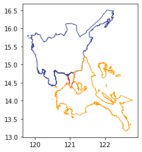
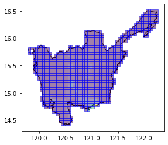
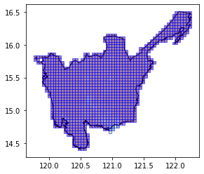

import geopandas as gpd
import matplotlib.pyplot as plt
import geowrangler2.raster_zonal_stats as rzsRaster Zonal Stats Tutorial
A basic introduction to Raster Zonal Stats
Basic Usage
Generate zonal stats for a GeoDataframe containing areas of interest using raster data
Terms:
- aoi - (area of interest) a geodataframe which we are interested in generating zonal statistics for
- raster data - the source raster containing the features which we are interested in collecting zonal stats for our aoi.
Load AOI
Our areas of interest (AOI) are three (3) Level 1 administration regions (ADM1) of the Philippines located in the island of Luzon.
# area multipolygons for regions 3,4,ncr of the philippines
aoi = gpd.read_file("../data/region34ncr_admin.geojson")CPU times: user 3.26 s, sys: 195 ms, total: 3.45 s
Wall time: 3.44 s# no_test
ax = aoi.plot(
ax=plt.axes(),
facecolor="none",
edgecolor=[
"#C62828",
"#283593",
"#FF9800",
],
)
# no_test
aoi| Reg_Code | Reg_Name | Reg_Alt_Name | geometry | |
|---|---|---|---|---|
| 0 | 130000000 | National Capital Region | NCR | MULTIPOLYGON (((121.03842 14.78525, 121.03815 ... |
| 1 | 030000000 | Region III | Central Luzon | MULTIPOLYGON (((120.11687 14.76309, 120.11684 ... |
| 2 | 040000000 | Region IV-A | Calabarzon | MULTIPOLYGON (((122.72165 13.36485, 122.72143 ... |
Download Philippine Population Data
see the Humanitarian Data Exchange World Population Counts - Philippines
We download our raster Data as GeoTiff files from the Humanitarian Data Exchange site.
Note
This maybe slow as the file is about 180 Mb and depending on your internet download speed may take more than 5 minutes
# PHL population HDX links
phil_pop_link = "https://data.worldpop.org/GIS/Population/Global_2000_2020/2020/PHL/phl_ppp_2020.tif"
phil_pop_dset = "phl_pop_2020.tif"![ ! -e ../data/{phil_pop_dset} ] && curl -o ../data/{phil_pop_dset} {phil_pop_link} % Total % Received % Xferd Average Speed Time Time Time Current
Dload Upload Total Spent Left Speed
100 180M 100 180M 0 0 576k 0 0:05:19 0:05:19 --:--:-- 430k
CPU times: user 12 s, sys: 3.57 s, total: 15.6 s
Wall time: 5min 19sTo create our raster zonal stats, we just need to set the aggregations, as well as some extra arguments, such as the nodata value in the raster.
results = rzs.create_raster_zonal_stats(
aoi,
f"../data/{phil_pop_dset}",
aggregation=dict(
func=["sum", "count"],
column="population",
output=["population_count", "samples"],
),
extra_args=dict(nodata=-99999), # nodata value is -99999
)CPU times: user 4.22 s, sys: 128 ms, total: 4.35 s
Wall time: 4.34 sresults| Reg_Code | Reg_Name | Reg_Alt_Name | geometry | samples | population_count | |
|---|---|---|---|---|---|---|
| 0 | 130000000 | National Capital Region | NCR | MULTIPOLYGON (((121.03842 14.78525, 121.03815 ... | 70786 | 13165866.0 |
| 1 | 030000000 | Region III | Central Luzon | MULTIPOLYGON (((120.11687 14.76309, 120.11684 ... | 2558377 | 11493727.0 |
| 2 | 040000000 | Region IV-A | Calabarzon | MULTIPOLYGON (((122.72165 13.36485, 122.72143 ... | 1876244 | 15952383.0 |
Using Grid Tile AOIs
We can also use tile grids as our AOIs.
# note that you don't need to load the aoi first
grid_aoi_file = "../data/region3_admin_grids.geojson"grid_aoi_results = rzs.create_raster_zonal_stats(
grid_aoi_file,
f"../data/{phil_pop_dset}",
aggregation=dict(
func=["sum", "count"],
column="population",
output=["population_count", "samples"],
fillna=[True, True],
),
extra_args=dict(nodata=-99999), # nodata value is -99999
)CPU times: user 8.57 s, sys: 12.2 ms, total: 8.59 s
Wall time: 8.58 sgrid_aoi_results.head()| x | y | geometry | samples | population_count | |
|---|---|---|---|---|---|
| 0 | 0 | 30 | POLYGON ((119.78583 15.70870, 119.83075 15.708... | 171 | 1171.764038 |
| 1 | 0 | 31 | POLYGON ((119.78583 15.75193, 119.83075 15.751... | 329 | 278.567200 |
| 2 | 0 | 32 | POLYGON ((119.78583 15.79516, 119.83075 15.795... | 345 | 279.140198 |
| 3 | 1 | 30 | POLYGON ((119.83075 15.70870, 119.87566 15.708... | 158 | 808.681152 |
| 4 | 1 | 32 | POLYGON ((119.83075 15.79516, 119.87566 15.795... | 20 | 0.000000 |
# no_test
ax = aoi[aoi.Reg_Name == "Region III"].plot(
ax=plt.axes(), facecolor="none", edgecolor="black"
)
ax = grid_aoi_results.plot(
ax=ax, column="population_count", edgecolor="blue", alpha=0.5
)
Using Bing Tile Grid Tile AOIs
We can also use pre-existing Bing tile grids as our AOIs.
# note that you don't need to load the aoi first
bingtile_grid_aoi_file = "../data/region3_bingtile_grid13.geojson"bingtile_grid_aoi_results = rzs.create_raster_zonal_stats(
bingtile_grid_aoi_file,
f"../data/{phil_pop_dset}",
aggregation=dict(
func=["sum", "count"],
column="population",
output=["population_count", "samples"],
fillna=[True, True],
),
extra_args=dict(nodata=-99999), # nodata value is -99999
)CPU times: user 10.6 s, sys: 124 ms, total: 10.7 s
Wall time: 10.7 sbingtile_grid_aoi_results.head()| quadkey | geometry | samples | population_count | |
|---|---|---|---|---|
| 0 | 1323030303301 | POLYGON ((120.10254 14.73239, 120.10254 14.774... | 737 | 196.756744 |
| 1 | 1323030303300 | POLYGON ((120.05859 14.73239, 120.05859 14.774... | 50 | 35.732861 |
| 2 | 1323030303311 | POLYGON ((120.19043 14.73239, 120.19043 14.774... | 248 | 383.338013 |
| 3 | 1323030303133 | POLYGON ((120.19043 14.77488, 120.19043 14.817... | 901 | 5621.879395 |
| 4 | 1323030303131 | POLYGON ((120.19043 14.81737, 120.19043 14.859... | 1328 | 6584.988770 |
# no_test
ax = aoi[aoi.Reg_Name == "Region III"].plot(
ax=plt.axes(), facecolor="none", edgecolor="black"
)
ax = bingtile_grid_aoi_results.plot(
ax=ax, column="population_count", edgecolor="blue", alpha=0.5
)